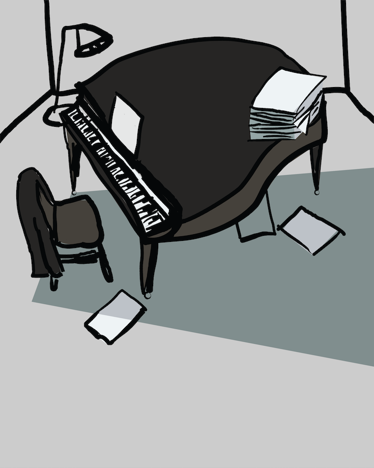

Current events
-
11–13 nov 2016
4pm–6pm Imaginary Lexicon of Cluj, Part II: The Book
Event archive
-
31 oct – 6 nov 2016
5.30pm–7.30pm Cosmin Bumbuț: Intimate Room -

14–16 oct 2016
6pm–8pm Alex Negriuc: Study Room -
7–17 sept 2016
mon–fri: 6pm–8pm
sat–sun: 4.30pm–6.30pm Imaginary Lexicon of Cluj -
28–29 may 2016
opening fri 27 may, 5.30pm The Making of Selfie Automaton -
13–26 may 2016
opening fri 13 may, 6pm Loránd Vakarcs: Land(e)scape - tue 10 may 2016, 7–9pm Six Voices
- 15–29 apr 2016 George Roșu: Instantly modified future plans